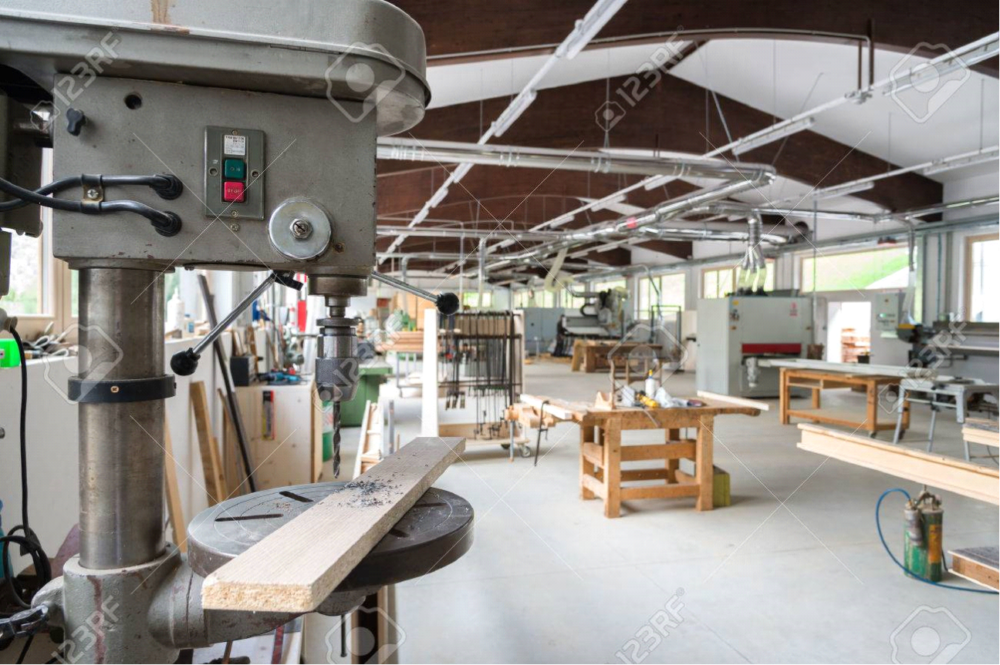
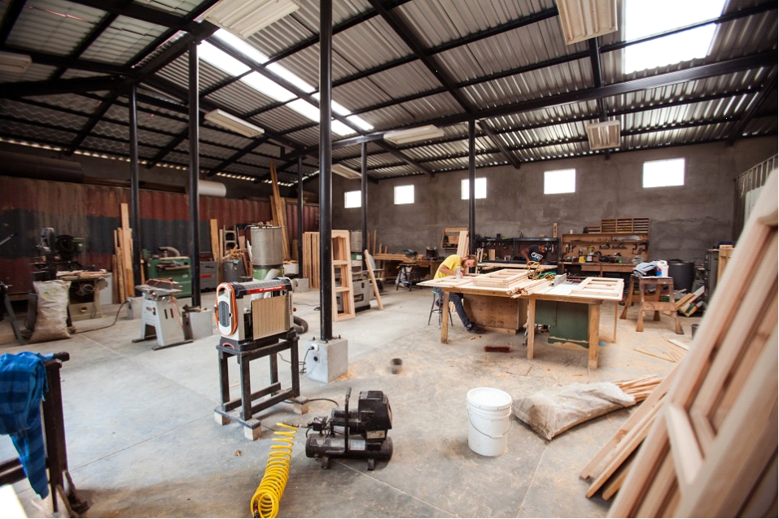

Műhely
Budaörsön található műhelyünkben 4 kollégámmal dolgozom a legkorszerűbb gépekkel. Mérete miatt bőven elfér benne akár több hónapnyi előre megmunkált anyag, amely lehetővé teszi, hogy a hideg téli napokon is tudjunk dolgozni a későbbi projektjeinken. A fának is nagyon jót tesz a még beépítés előtti pár hónapos fűtött helyiségben való tárolás, száradás. Műhelyünkben csak a Biatorbágyi R-Ács Fatelepről származó anyaggal foglalkozunk, amely eléri az A osztályú értékelést.
Hátsó raktárrész:
